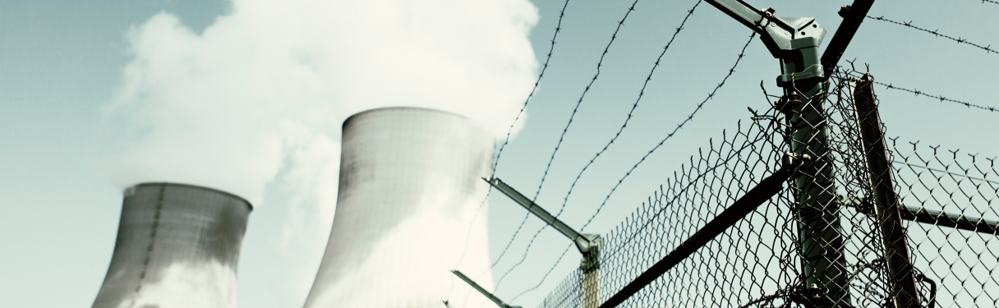

The Impact of Climate Change on Renewable Energy Infrastructure
In recent years, the effects of climate change have become increasingly evident, posing significant challenges to the development and sustainability of renewable energy infrastructure worldwide. From extreme weather events to shifting climatic patterns, the impacts of a warming planet are reshaping the landscape for renewable energy production and distribution.
One of the most notable consequences of climate change is the increase in extreme weather events, including hurricanes, wildfires, and floods. These events can cause damage to renewable energy infrastructure such as solar panels, wind turbines, and hydroelectric dams, disrupting energy production and posing safety risks to nearby communities.
Additionally, changes in temperature and precipitation patterns can affect the availability and reliability of renewable energy sources. Droughts, for example, can reduce water levels in reservoirs, impacting the generation capacity of hydroelectric power plants. Similarly, changes in wind patterns can affect the efficiency of wind turbines, leading to fluctuations in energy output.
Rising sea levels also pose a threat to coastal renewable energy infrastructure, including offshore wind farms and tidal energy installations. As sea levels continue to rise, these assets face increased exposure to saltwater corrosion and storm surges, requiring costly repairs and reinforcements to ensure their long-term viability.
Despite these challenges, the renewable energy sector is adapting to the realities of a changing climate. Investments in resilient infrastructure designs, advanced monitoring technologies, and grid modernization efforts are helping to mitigate the impacts of climate change on renewable energy systems. Furthermore, innovative solutions such as floating solar arrays and offshore wind turbines are expanding the possibilities for renewable energy deployment in coastal and water-rich regions.
As the global community continues to address the urgent need for climate action, the resilience and adaptability of renewable energy infrastructure will be critical in ensuring a sustainable and low-carbon future. By investing in climate-resilient energy systems and embracing technological innovation, we can build a more resilient energy future that is better equipped to withstand the challenges of a changing climate.
